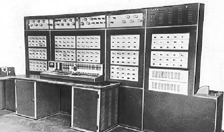

Історію розвитку ЕОМ варто описувати, використовуючи знання про покоління обчислювальних машин. Кожне покоління ЕОМ характеризується своїми конструктивними особливостями і можливостями. Зробимо опис кожного з поколінь, однак пам'ятатимемо, що розподіл ЕОМ на покоління є умовним, оскільки водночас випускалися машини різного рівня.
Перше покоління. Різкий стрибок у розвитку обчислювальної техніки відбувся в 40-х роках, після Другої світової війни, і пов'язаний він був із появою якісно нових електронних пристроїв - електронно-вакуумних ламп.
Друге покоління. Розробники ЕОМ завжди прямували за прогресом в електронній техніці. Коли в середині 50-х років на зміну електронним лампам прийшли напівпровідникові прилади, почалося переведення ЕОМ на напівпровідники.
Третє покоління. Чергова зміна поколінь ЕОМ відбулася наприкінці 60-х років при переході від напівпровідникових приладів у пристроях ЕОМ до інтегральних схем. Інтегральна схема (мікросхема) - це невелика пластинка кристалу кремнію, на якій розміщуються сотні і тисячі елементів: діодів, транзисторів, конденсаторів, резисторів тощо.
Четверте покоління. У процесі вдосконалення мікросхем збільшувалася їхня надійність і щільність розміщених в них елементів. З'явилися великі інтегральні схеми (ВІС), у яких на один квадратний сантиметр припадає декілька десятків тисяч елементів. На основі ВІС були розроблені ЕОМ наступного четвертого покоління.
П'яте покоління. Починаючи із середини 90-х років, у потужних комп'ютерах застосовуються супермасштабні ВІС, які вміщують сотні тисяч елементів на квадратний сантиметр. Багато фахівців почали говорити про комп'ютери п'ятого покоління. Характерною рисою комп'ютерів п'ятого поколінняповинно бути використання штучного інтелекту і природних мов спілкування. Передбачається, що обчислювальні машини п'ятого покоління будуть легко-керованими. Користувач зможе голосом подавати команди машині.